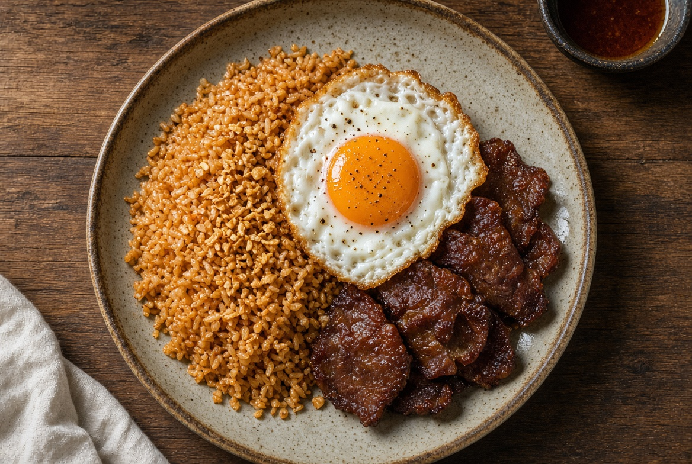
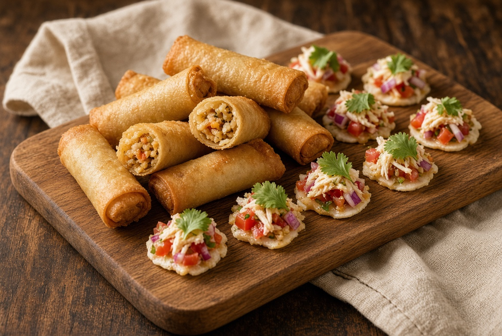
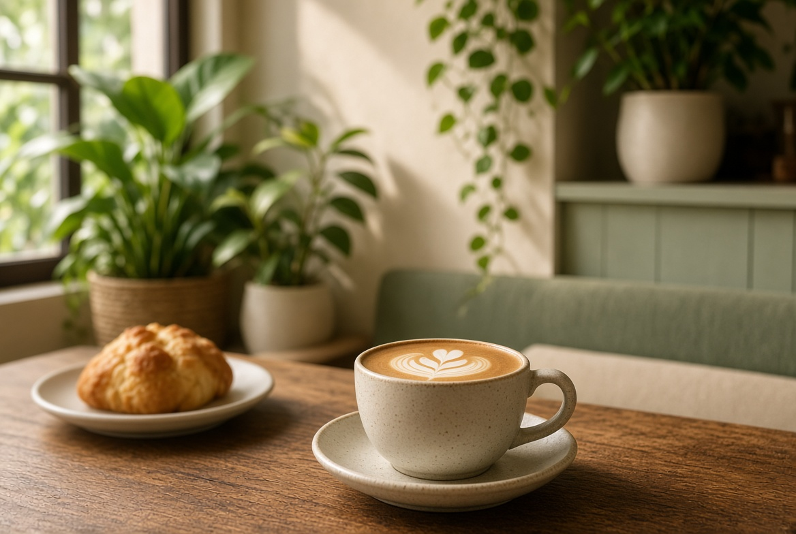

Silog
Morning plates
Garlic rice and silog-style meals from the kitchen.
Cawag, Subic, Zambales
A place to hang out in Cawag.
Tambayan Cawag is a neighborhood restaurant and cafe in Cawag, Subic, Zambales. Come for silog, snacks, and a seat that feels like home.
The hangout
Tambayan means hangout. Tambayan Cawag is a local spot in Cawag, Subic where you can eat, drink coffee, and stay a while. The kitchen serves go-to plates, snacks, and silog. In the afternoon the cafe opens for coffee and a quieter table.
From the kitchen

Silog
Garlic rice and silog-style meals from the kitchen.

Snacks
Snacks and go-to orders while you hang out.

Cafe
The cafe opens at 1:00 PM.
Cafe
The cafe is its own room in the same house. Different hours. Different menu. Same Tambayan Cawag welcome.
1:00 PM – 12:00 AM
Checking hours...Today
Go-To / Snacks / Silog
10:00 AM – 12:00 AM
Checking hours...Coffee, drinks, and a slower table
1:00 PM – 12:00 AM
Checking hours...